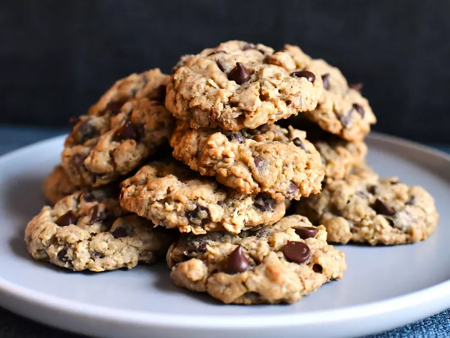

Chocolate Chip Oatmeal Cookies
Home

Description
Made with bananas, oats and no added sugar, this chocolate chip oatmeal cookie recipe from The Burlap Bag is quick and guilt-free!
Ingredients
- 2 medium ripe bananas, mashed
- 1 cup of rolled oats
- 1/4 cup chocolate chips
Steps
- Preheat oven to 350°F.
- Spray a non-stick cookie sheet with cooking spray.
- Combine the mashed bananas and oats in a bo
- Fold in the chocolate chips and place a tablespoon of each on the cookie sheet.
- Bake for 15 minutes.